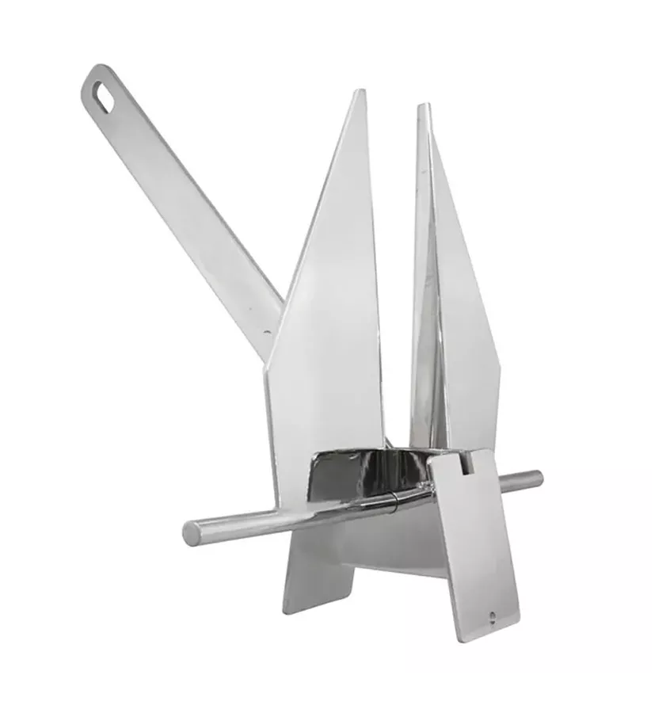
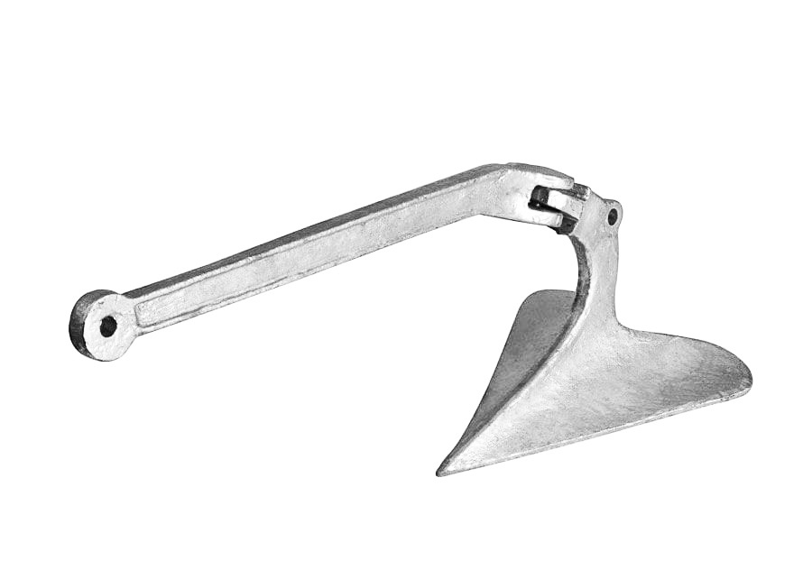

To jest link do kotwicy dolnej  Rysunek 1. Kotwica typu Danforth

Kotwice służą do unieruchamiania jednostek pływających. Poniżej przedstawiono dwa przykłady różnych rodzajów kotwic.
To jest link do kotwicy górnej  Rysunek 2. Kotwica pługowa
